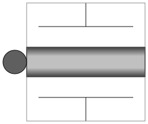
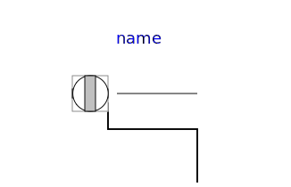
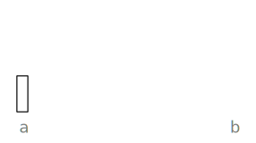
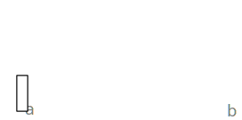
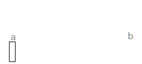
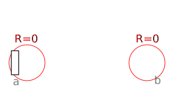

This package contains connectors and partial models (i.e., models that are only used to build other models) of the MultiBody library.
| Name | Description |
|---|---|
| Coordinate system fixed to the component with one cut-force and cut-torque (no icon) | |
| Coordinate system fixed to the component with one cut-force and cut-torque (filled rectangular icon) | |
| Coordinate system fixed to the component with one cut-force and cut-torque (non-filled rectangular icon) | |
| Coordinate system fixed to the component used to express in which coordinate system a vector is resolved (non-filled rectangular icon) | |
|  FlangeWithBearing | Connector consisting of 1-dim. rotational flange and its bearing frame |
|  FlangeWithBearingAdaptor | Adaptor to allow direct connections to the sub-connectors of FlangeWithBearing |
|  PartialTwoFrames | Base model for components providing two frame connectors + outer world + assert to guarantee that the component is connected |
|  PartialTwoFramesDoubleSize | Base model for components providing two frame connectors + outer world + assert to guarantee that the component is connected (default icon size is factor 2 larger as usual) |
| Base model for components providing one frame_a connector + outer world + assert to guarantee that the component is connected | |
| PartialOneFrame_b | Base model for components providing one frame_b connector + outer world + assert to guarantee that the component is connected |
|
|
Base model for elementary joints (has two frames + outer world + assert to guarantee that the joint is connected) |
|  PartialForce | Base model for force elements (provide frame_b.f and frame_b.t in subclasses) |
|  PartialLineForce | Base model for line force elements |
|
|
Base model to measure an absolute frame variable |
|
|
Base model to measure a relative variable between two frames |
| PartialVisualizer | Base model for visualizers (has a frame_a on the left side + outer world + assert to guarantee that the component is connected) |
| Set absolute position vector of frame_resolve to a zero vector and the orientation object to a null rotation | |
|
|
|
|
|
|
| Interface for a function returning a color map |